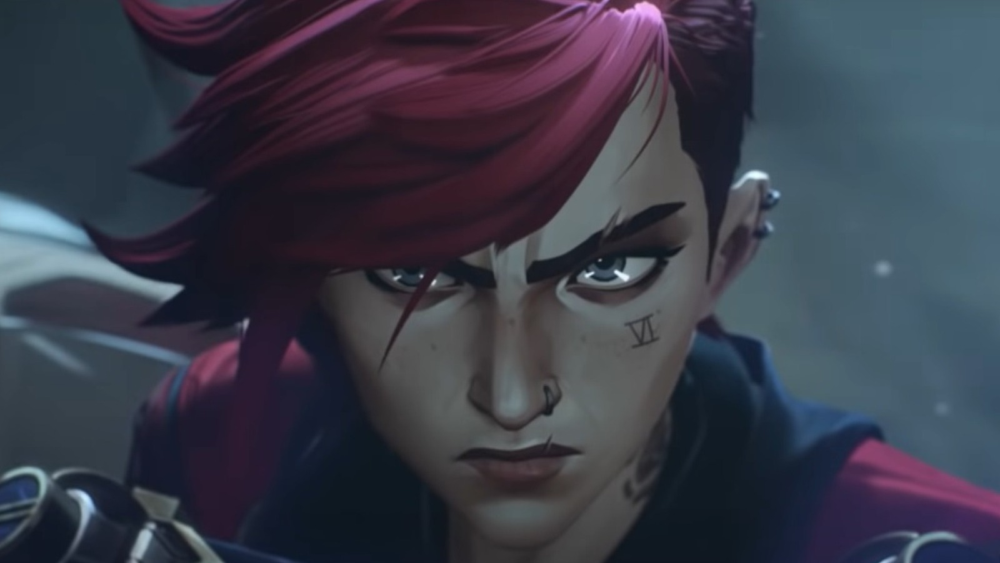
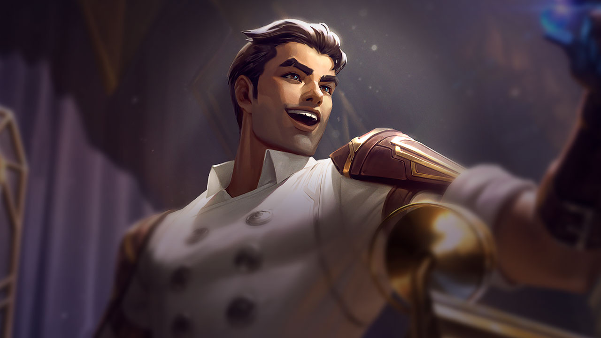
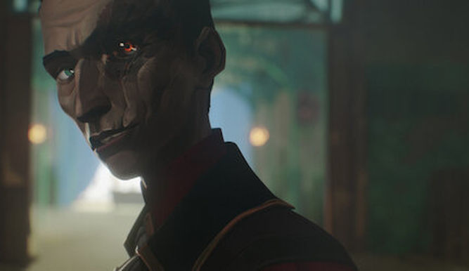

Arcane es una serie de animación producida por Riot Games y animada por el estudio francés Fortiche Productions
basada en el exitoso videojuego League of Legends o también conocido
popularmente como LoL. La historia se centra principalmente en dos ciudades: en la rica y equilibrada Piltover y
el sórdido corazón de Zaun.
Las tensiones entre ambas ciudades crecen aún más con la creación de hextech, la forma en la que cualquier
persona puede controlar la energía mágica; y por otro lado en Zaun aparece una nueva droga llamada shimmer que
transforma a los humanos en monstruos.
Directores:
Al ser una serie, esta es dirigida por varios directores, quienes son:
Riot Games (Creador)
Christian Linke (Creador): Co-creador y productor ejecutivo.
Alex Yee (Creador): Co-creador y productor ejecutivo.
Pascal Charrue (Director)
Arnaud Delord (Director)
Jérôme Combe (Director)
Ash Brannon (Director)
Personajes:
Desde mi punto de vista los 5 mejores personales de esta serie son:

Vi:
En League of Legends, Vi, Violet, es una guardiana de Piltover encargada de mantener la paz, aunque en el tráiler la vemos sentada en una celda. En un principio era una criminal de las sucias calles de Zaun, donde perfeccionó sus habilidades de supervivencia al crecer prácticamente sola. La historia girará en torno a la búsqueda de su hermana menor. Es impulsiva, tiene la mecha corta y maneja un par de guantes hextech que tienen una fuerza temible.
Jinx:
Jinx Powder es un caos andante que lleva un arsenal letal de armas, ¡y sobre todo le encanta que las cosas hagan "boom"! Vive en Zaun, donde lleva a cabo sus actividades criminales sembrando el caos y el pánico. Sin embargo, parece que en algún momento se le fue la mano, por lo que su hermana Vi viene a buscarla.

Jayce:
Jayce, al igual que Viktor, también es un inventor que va más allá de los límites para lograr un progreso cada vez mayor y hará todo lo que esté en su mano para proteger a Piltover. Para ello utiliza un martillo hexagonal que puede asestar un golpe demoledor.

Silco:
El "villano" de esta entrega. Formado desde pequeño en las calles de Zaun, y viviendo a la sombras de los ciudadanos de Piltover, se forma una de las personalidades y desarroyo de personajes más interesantes.
Caytlin:
Caitlyn es una gran tiradora con un temperamento firme y una de las mejores guardianas de Piltover, que utiliza su inteligencia superior para atrapar a los criminales que se atreven a perturbar la paz utópica.
El nivel de detalle de esta serie cuando nos referimos a la animación de la misma es de tal calibre que practicamente, cada segundo que pausemos, podria ser un fondo de escritorio. Aqui unos ejemplos:
El trailer:
Música:
Un aspecto que hay que resaltar de esta serie es el apartado musical. La banda sonora original de Arcane ha sido compuesta por diferentes autores, tales como Mako (Alex Seaver), Alexander Temple, Cameron Stone, Adam Michalak, Kelci Hahn o Jett Galindo, aunque en la serie también escucharemos canciones de artistas tan conocidos como Imagine Dragons, que han lanzado incluso videoclip de su tema “Enemy” junto a J.I.D: